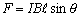

磁力
編寫日期: 2007年8月25日
程式編號: FMLA 08

單位: I: A, B: T, l: m, θ: 角度, F: N
例題: 若有電流3A通過一長度為 1 m 的導電體，且有一均勻磁流通量為 0.7 T 的磁場通過導電體，導電體與磁埸的夾角為 30° ， 求導電體的作用力。
按 FMLA 08 再按 3 EXE 0.7 EXE 1 EXE 30 EXE (顯示F=1.05N)
註1: 按 FMLA 後若果忘記程式編號，可以按 ↑或 ↓ 找尋內置公式的英文名稱，找到公式後再按 EXE 選取公式即可。
註2: 若果是fx-50F PLUS，在輸入公式變數時，可以按 SHIFT LOOK 查看公式，再按 SHIFT LOOK 返回輸入變數。
返回 CASIO fx-50FH / fx-50F PLUS 程式集